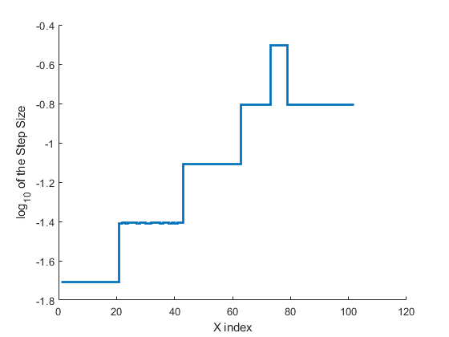

Contents
close all; clear; clc; rng(7312947)
Example 1.1 - from MC submission 35194
X = 0:0.1:10;
Y = 1./(X/100 + 0.01) + X.^2 - 0.1 * X.^3;
tol = 0.1;
opts.interior_optflag = true;
opts.post_optflag = true;
opts.display_flag = true;
[xi, yi] = reduce_linear_interp1(X,Y,tol,opts);
Original Data Length: 101
Finding reduced number of points maintaining error tolerance...
...Finished!
Reduced Length: 34
with maximum absolute error of 0.08469
Percentage of original size: 33.6634%
Mean Squared Error: 0.0012427
Solving QP to minimize SE...
...Finished!
Percentage of Original Mean Squared Error : 58.726%
with maximum absolute error of 0.082061

Example 1.2 - from MC submission 35194 with lower tolerance and more points
X = 0:0.0001:10;
Y = 1./(X/100 + 0.01) + X.^2 - 0.1 * X.^3;
[xi, yi] = reduce_linear_interp1(X,Y,0.01);
Original Data Length: 100001
Finding reduced number of points maintaining error tolerance...
...Finished!
Reduced Length: 103
with maximum absolute error of 0.0096455
Percentage of original size: 0.103%
Mean Squared Error: 1.381e-05
Solving QP to minimize SE...
...Finished!
Percentage of Original Mean Squared Error : 41.0682%
with maximum absolute error of 0.0095993

Example 2.1 - gaussian pdf with randomly spaced points
X = cumsum(rand(1000,1));
X = 200*X/max(X);
f1 = @(x,m,s) exp(-(x-m).^2/(2*s^2))/(s*sqrt(2*pi));
Y = f1(X,100,5) + f1(X,120,3) - f1(X,30,2);
tol = 0.02*(max(Y)-min(Y));
[xi, yi] = reduce_linear_interp1(X,Y,tol);
Original Data Length: 1000
Finding reduced number of points maintaining error tolerance...
...Finished!
Reduced Length: 43
with maximum absolute error of 0.0061674
Percentage of original size: 4.3%
Mean Squared Error: 1.9513e-06
Solving QP to minimize SE...
...Finished!
Percentage of Original Mean Squared Error : 31.727%
with maximum absolute error of 0.0066432
Example 2.2 - gaussian pdf with randomly spaced points and random noise
X = cumsum(rand(1000,1));
X = 200*X/max(X);
f1 = @(x,m,s) exp(-(x-m).^2/(2*s^2))/(s*sqrt(2*pi));
Y = f1(X,100,5) + f1(X,120,3) - f1(X,30,2) + rand(size(X))/200;
tol = 0.02*(max(Y)-min(Y));
[xi, yi] = reduce_linear_interp1(X,Y,tol);
Original Data Length: 1000
Finding reduced number of points maintaining error tolerance...
...Finished!
Reduced Length: 47
with maximum absolute error of 0.0052645
Percentage of original size: 4.7%
Mean Squared Error: 3.5922e-06
Solving QP to minimize SE...
...Finished!
Percentage of Original Mean Squared Error : 65.3261%
with maximum absolute error of 0.0054071
Example 3.1 - digital sine wave with noise
X = linspace(0,8,1000)';
F = round(15*sin(X));
Y = F + round(0.55*rand(size(X))) - round(0.55*rand(size(X))) ;
tol = 2;
[xi, yi] = reduce_linear_interp1(X,Y,tol);
Original Data Length: 1000
Finding reduced number of points maintaining error tolerance...
...Finished!
Reduced Length: 17
with maximum absolute error of 1.7942
Percentage of original size: 1.7%
Mean Squared Error: 0.31186
Solving QP to minimize SE...
...Finished!
Percentage of Original Mean Squared Error : 76.2416%
with maximum absolute error of 1.558
Example 3.2 - sine wave with normal random noise
X = linspace(0,8,1e6)';
F = 15*sin(X);
Y = F + randn(size(F))/2;
tol = 2.5;
opts.post_optflag = 0;
[xi, yi] = reduce_linear_interp1(X,Y,tol,opts);
Original Data Length: 1000000
Finding reduced number of points maintaining error tolerance...
...Finished!
Reduced Length: 83
with maximum absolute error of 2.4979
Percentage of original size: 0.0083%
Mean Squared Error: 0.34957